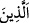
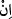

zıhar, başka milletlerde olmadığı halde özellikle Arapların cehâlet dönemlerine âid
yeminlerindendir. İslâmiyetten sonra artık bu çirkin âdeti devam ettirip cehâlet
âdetlerine riâyet etmeleri onlara yakışmaz. Dolayısıyla sanki şöyle denmiş oluyor:
“Sizden çirkin ve hoş olmayan âdetinize göre zıhar yapanların kadınları...” Ayrıca
minküm ifâdesi, dini hükmün faydasının, kabul edip uymaları durumunda müminlere
mahsus olduğuna işâret etmek için gelmiş de olabilir. Bu takdirde mânâ: “Ey Allah’ın
sözlerini doğrulayıp emirlerine uyan müminler!” şeklinde olur. Çünkü, inkârcılar
Allah’ın hitâbını dinleseler de doğru olanla amel etmezler.
Âyette geçen “kadınları” anlamındaki min nisâihim ifâdesinde zıharın câriyelerde
geçerli olmadığına işâret vardır. Bundan dolayıdır ki, fıkıhçılara göre, zıharın
gerçekleşmesi için rüknü, şartı ve ehil olma durumları vardır. Rüknü, bahsi geçen
benzetmenin bulunması; şartı, benzetilen kadının nikâhlı olmasıdır. Bu sebeple zıhar
câriye hakkında sahih olmaz. Ehliyet ise, keffârete ehil olmaktır. Dolaysiyle, zimmî,
sabî ve mecnûnun zıharı sahih değildir. Hükmü de kadının asıl nikâhına sâhib olmakla
beraber zıharın keffâretini ödemedikçe onunla cinsel ilişkide bulunmasının haram
olmasıdır.
“Onların anaları değildir.” Bu cümle, âyet-i kerimenin başındaki “
/ellezîne”
ism-i mevsûlü için haberdir. Yâni zıhar yapan erkeklerin kadınları gerçekte anaları
değildir. Bu mahza yalandır. Yâni karısına: “Sen bana anamın sırtı gibisin” diyen kimse
bu sözü ile eşini anasının hükmüne katmış ve anasına benzetmiş olur. Halbuki, anası
karısına benzemediğinden, her ikisinin durumları değişik olduğundan, benzetme bâtıldır.
Câhiliye dönemi arapları bu benzetme ile zıhar yapılan kadının haramlığının ananın
haramlığı gibi ağır bir haram ve şiddetli olduğunu ifâde etmek istiyorlardı.
Denilirse ki, zıharın mânâsı “Sen, anamın bana haram olduğu gibi haramsın” demekten
ibârettir. Burada kadının, kocasının anası olduğu iddiâsı yoktur ki bu iddiâ
reddedilebilsin ve haramlığın analar için olduğu sâbit olsun. Buna şöyle cevap
verilebilir: Bu şekilde haram kılma, zıhar yapan kişinin, eşinin kendi anası olduğunu
iddiâ etmesi hükmündedir. Yahut, “onların anaları değildir” ifâdesinden maksad, kişinin
anasıyla karısı arasında hüküm bakımından bir benzerlik olmadığını bildirmektir.
Özellikle de zıhar yapılan kadının, hüküm bakımından kocasının anası olmadığı kesin
olarak ifâde edilmektedir.
“Onların anaları ancak kendilerini doğuran kadınlardır.” Buradaki “ / in” harfi,
nefiy için olan “mâ” anlamında nâfiyedir. Yâni doğrusu onların anaları, -karıları değil-
gerçekte zıhar yapanları doğuran kadınlardır. Dolayısıyla bunlar, haram olmak
bakımından kendilerini doğurmayan kadınlara benzemezler. Ancak, şeriatın haram
hükmüne kattığı Peygamberimiz (s.a.)’in hanımları, kendilerini emziren süt anaları ile
babalarının nikâhlıları bu hükümdedir. Bunlar ana gibi ikrâma ve hürmete lâyık
olduklarından haram olmakta da analar hükmüne girmişlerdir. Ama eşleri olan kadınlar
kocalarına analık bakımından en uzak olan kadınlardır ve hiçbir yönden analarının
hükmüne girmezler.